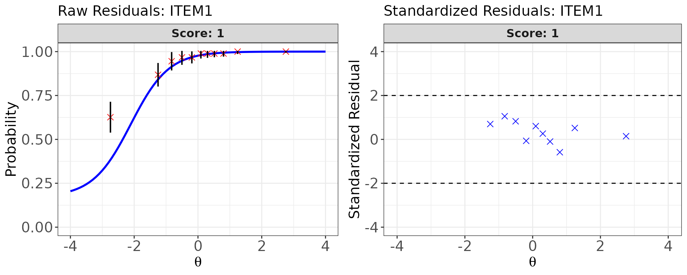
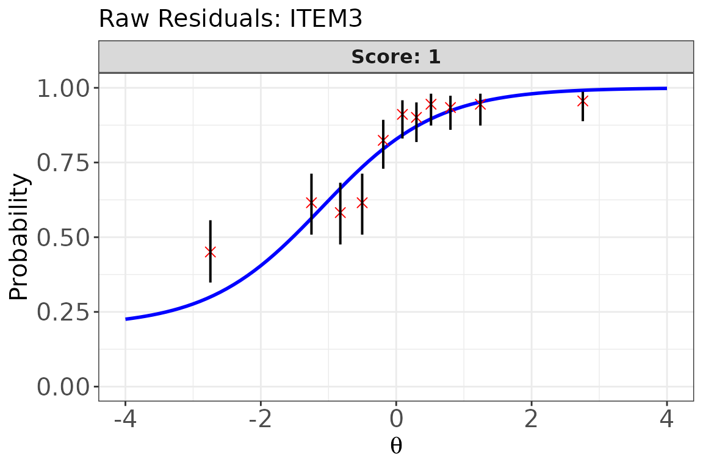
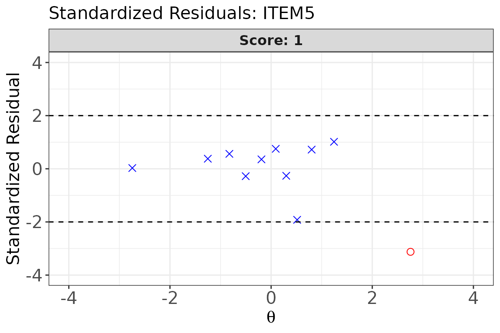
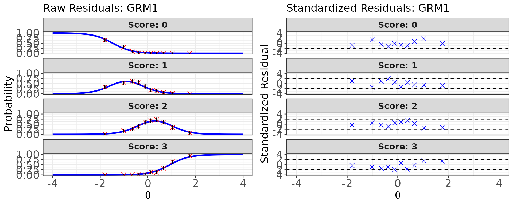

Model-Data Fit Evaluation
Source:vignettes/articles/model-fit-evaluation.Rmd
model-fit-evaluation.RmdOverview
After item calibration, it is essential to verify that the chosen IRT model adequately describes the observed item response data. A misfitting item can lead to biased ability and item parameter estimates, which in turn jeopardize the validity of test score interpretations and downstream applications such as equating and CAT (Ames & Penfield, 2015).
irtQ provides two complementary sets of item-level fit tools:
| Function | Statistics | Conditioning variable |
|---|---|---|
irtfit() |
, , infit, outfit | Estimated (ability bins) |
sx2_fit() |
-(Kang & Chen, 2008; Orlando & Thissen, 2000, 2003) | Observed summed score |
Both functions accept either an est_irt object (produced
by est_irt()) or a plain item metadata data frame as their
first argument x, and both support mixed-format tests
containing dichotomous and polytomous items.
Setup: Calibrated Data for All Examples
We define two test forms — a binary-only test and a mixed-format test — and calibrate each so we have item parameters and ability estimates to pass to the fit functions throughout this vignette.
Binary test (20 items, 3PLM)
# True item parameters
meta_bin <- shape_df(
par.drm = list(
a = c(1.0, 1.2, 0.8, 1.4, 0.9, 1.1, 1.3, 0.7, 1.0, 1.2,
0.9, 1.1, 1.4, 0.85, 1.0, 1.2, 0.8, 1.1, 1.3, 0.9),
b = c(-2.0, -1.5, -1.0, -0.6, -0.2, 0.0, 0.4, 0.8, 1.1, 1.5,
-1.3, -0.4, 0.5, 1.0, 1.8, -0.8, 0.2, 0.7, -1.1, 1.3),
g = rep(0.15, 20)
),
item.id = paste0("ITEM", 1:20),
cats = 2,
model = "3PLM"
)
# Simulate 1000 examinees from N(0, 1)
theta_bin <- rnorm(1000, mean = 0, sd = 1)
resp_bin <- simdat(x = meta_bin, theta = theta_bin, D = 1.702)
# Calibrate item parameters
mod_bin <- est_irt(
data = resp_bin,
D = 1.702,
model = "3PLM",
cats = 2,
item.id = paste0("ITEM", 1:20),
use.gprior = TRUE,
gprior = list(dist = "beta", params = c(4, 16)),
EmpHist = FALSE,
verbose = FALSE
)
meta_cal_bin <- mod_bin$par.est
# ML ability estimates (required by irtfit())
score_bin <- est_score(
x = meta_cal_bin,
data = resp_bin,
D = 1.702,
method = "ML",
range = c(-5, 5)
)Mixed-format test (15 items 3PLM + 5 items GRM, 4 categories)
meta_mix <- shape_df(
par.drm = list(
a = c(1.0, 1.2, 0.9, 1.1, 0.8, 1.3, 1.0, 0.9, 1.1, 1.2,
0.85, 1.1, 1.3, 0.9, 1.0),
b = c(-1.5, -1.0, -0.5, -0.2, 0.2, 0.5, 0.8, 1.1, 1.4, -1.2,
-0.4, 0.1, 0.6, 1.0, -0.8),
g = rep(0.15, 15)
),
par.prm = list(
a = c(1.5, 1.2, 1.0, 1.3, 0.9),
d = list(
c(-1.5, -0.3, 0.9),
c(-1.2, 0.0, 1.1),
c(-0.9, 0.4, 1.4),
c(-1.1, -0.1, 1.0),
c(-1.3, 0.3, 1.2)
)
),
item.id = c(paste0("DRM", 1:15), paste0("GRM", 1:5)),
cats = c(rep(2, 15), rep(4, 5)),
model = c(rep("3PLM", 15), rep("GRM", 5))
)
theta_mix <- rnorm(1000, mean = 0, sd = 1)
resp_mix <- simdat(x = meta_mix, theta = theta_mix, D = 1.702)
mod_mix <- est_irt(
data = resp_mix,
D = 1.702,
model = c(rep("3PLM", 15), rep("GRM", 5)),
cats = c(rep(2, 15), rep(4, 5)),
item.id = c(paste0("DRM", 1:15), paste0("GRM", 1:5)),
use.gprior = TRUE,
gprior = list(dist = "beta", params = c(4, 16)),
EmpHist = FALSE,
verbose = FALSE
)
meta_cal_mix <- mod_mix$par.est
# EAP ability estimates
score_mix <- est_score(
x = meta_cal_mix,
data = resp_mix,
D = 1.702,
method = "EAP",
norm.prior = c(0, 1),
nquad = 41
)Part 1: Traditional Fit Statistics with irtfit()
How irtfit() Works
irtfit() computes four classical item-level fit
statistics by grouping examinees into ability bins and comparing the
observed response frequencies in each bin with the
expected frequencies predicted by the calibrated item response
function (IRF).
All statistics are built on the same underlying individual-level residual:
where is examinee ’s scored response to item and is the IRF-predicted probability of that response at the examinee’s estimated ability (Ames & Penfield, 2015).
The four statistics differ in how they aggregate these residuals:
and — Group-based statistics
Note. The formulas below are presented for dichotomous items (scored 0/1) for clarity. The same group-based framework extends to polytomous items by replacing the binary response with category-specific observed and expected frequencies, but the dichotomous form is the standard reference in the literature (Ames & Penfield, 2015).
Examinees are first sorted into ability bins. Within each bin :
where is the number of examinees in bin , is the observed number of correct responses, is the observed proportion correct, and is the model-predicted expected proportion correct in that bin.
- follows Bock (1960) and Yen (1981). Its degrees of freedom equal the number of ability bins minus the number of item parameters, (Ames & Penfield, 2015).
- follows McKinley & Mills (1985). Its degrees of freedom equal the number of ability bins, (Ames & Penfield, 2015).
Extension to polytomous items: For items with response categories, the degrees of freedom are extended to account for the multiple categories. The statistic has , and the statistic has , where is the final number of ability bins after any necessary cell collapsing.
Key difference between and df: For the statistic, the number of estimated item parameters is subtracted from the df (e.g., for a 3PLM item with bins, ). For , no such subtraction is made (). This means uses more degrees of freedom and tends to be more conservative.
Infit and Outfit — Individual-level statistics
Both infit and outfit treat each examinee as a separate bin (i.e., ) (Ames & Penfield, 2015; Wright & Panchapakesan, 1969):
The key difference is weighting:
- Outfit gives equal weight to each examinee. It is therefore more sensitive to unexpected responses at extreme ability levels (far from item difficulty), where is small and a single aberrant response inflates the statistic dramatically.
- Infit weights each residual by — the item information at that ability level. This down-weights extreme responses and makes infit more sensitive to misfit near the item difficulty, where most measurement information resides. For this reason, infit is generally preferred in practice.
Caution for non-Rasch models. Infit and outfit were developed in the Rasch measurement tradition (Wright & Panchapakesan, 1969) and their expected distributions under non-Rasch models (2PLM, 3PLM, GRM, GPCM) are less well understood. Use them as supplementary diagnostics alongside / when fitting these models (Ames & Penfield, 2015).
Ability Grouping: group.method, n.width,
and loc.theta
Because and require binning examinees by ability, the grouping choices materially affect the statistics:
| Argument | Option | Description |
|---|---|---|
group.method |
"equal.width" |
Bins span equal-length intervals on the scale. Easier to interpret geometrically; used by Yen (1981). |
group.method |
"equal.freq" |
Each bin contains approximately the same number of examinees (quantile-based). Preferred when the ability distribution is skewed. |
n.width |
integer | Number of bins . Yen (1981) used ; Bock (1960) allowed flexibility. Fewer bins = more examinees per bin but coarser resolution. |
loc.theta |
"average" |
The within-bin mean is used to compute expected probabilities . |
loc.theta |
"middle" |
The midpoint of the bin’s interval is used. |
Practical guidelines for bin specification:
- Bins should be wide enough to contain sufficient examinees for stable expected frequencies (avoid sparse cells), yet narrow enough that within-bin ability is approximately homogeneous (Hambleton et al., 1991).
- After binning, cells with very small expected frequencies are
automatically collapsed by
irtfit()before computing and . -
range.scoretrims extreme ability estimates before grouping; examinees outside the range are excluded from the fit analysis.
Key irtfit() Arguments
| Argument | Description |
|---|---|
x |
Item metadata data frame, or an est_irt /
est_item object |
score |
Numeric vector of examinee ability estimates |
data |
Response matrix (examinees × items) |
D |
Scaling constant — must match the value used in calibration |
group.method |
"equal.width" (default) or
"equal.freq"
|
n.width |
Number of ability bins (default 10) |
loc.theta |
"average" (default) or "middle"
|
range.score |
c(lower, upper) for trimming extreme
values. Default is NULL, which automatically uses the
minimum and maximum of the observed score vector. |
alpha |
Significance level for flagging items (default
0.05) |
overSR |
Standardized-residual threshold for flagging individual bins
(default 2) |
Return value of irtfit()
irtfit() returns an object of class irtfit
with the following components:
| Component | Description |
|---|---|
fit_stat |
Data frame with , , infit, outfit statistics and flags for all items |
contingency.fitstat |
Collapsed contingency tables used for and computation (one per item) |
contingency.plot |
Uncollapsed contingency tables used for residual plots |
individual.info |
Individual residuals and variances used for infit/outfit |
item_df |
Copy of the item metadata provided in x
|
The fit_stat columns include (one row per item, plus an
id column):
-
X2/df.X2/crit.val.X2/p.X2: statistic, degrees of freedom, critical value, and p-value -
G2/df.G2/crit.val.G2/p.G2: statistic, degrees of freedom, critical value, and p-value -
outfit/infit: mean-square outfit and infit statistics -
N: number of examinees used (afterrange.scoretrimming) -
overSR.prop: proportion of ability bins (prior to cell collapsing) whose standardized residuals exceedoverSR
Example 1: Binary test — equal-frequency bins
fit_bin1 <- irtfit(
x = meta_cal_bin,
score = score_bin$est.theta,
data = resp_bin,
D = 1.702,
group.method = "equal.freq", # ~equal number of examinees per bin
n.width = 11, # 11 bins → df = 11 - 3 = 8 for 3PLM (χ²)
loc.theta = "middle", # bin midpoint as representative θ
range.score = c(-4, 4), # trim extreme ML estimates
alpha = 0.05,
overSR = 2
)
# Summary of fit statistics for all items
fit_bin1$fit_stat
#> id X2 G2 df.X2 df.G2 crit.val.X2 crit.val.G2 p.X2 p.G2 outfit
#> 1 ITEM1 25.479 24.993 5 8 11.07 15.51 0.000 0.002 0.746
#> 2 ITEM2 16.091 18.334 5 8 11.07 15.51 0.007 0.019 0.516
#> 3 ITEM3 30.170 29.339 7 10 14.07 18.31 0.000 0.001 1.057
#> 4 ITEM4 4.889 5.528 7 10 14.07 18.31 0.673 0.853 0.796
#> 5 ITEM5 16.301 12.244 8 11 15.51 19.68 0.038 0.346 0.971
#> 6 ITEM6 13.662 13.907 7 10 14.07 18.31 0.058 0.177 0.958
#> 7 ITEM7 11.865 12.294 7 10 14.07 18.31 0.105 0.266 0.896
#> 8 ITEM8 27.282 21.806 8 11 15.51 19.68 0.001 0.026 0.991
#> 9 ITEM9 32.635 26.585 8 11 15.51 19.68 0.000 0.005 0.979
#> 10 ITEM10 15.871 17.167 7 10 14.07 18.31 0.026 0.071 0.910
#> 11 ITEM11 8.912 8.603 7 10 14.07 18.31 0.259 0.570 0.829
#> 12 ITEM12 12.889 13.262 7 10 14.07 18.31 0.075 0.209 0.929
#> 13 ITEM13 7.895 8.218 7 10 14.07 18.31 0.342 0.608 0.867
#> 14 ITEM14 24.818 19.197 8 11 15.51 19.68 0.002 0.058 0.966
#> 15 ITEM15 59.262 44.537 8 11 15.51 19.68 0.000 0.000 0.961
#> 16 ITEM16 7.252 7.766 6 9 12.59 16.92 0.298 0.558 0.844
#> 17 ITEM17 15.654 12.845 8 11 15.51 19.68 0.048 0.304 0.986
#> 18 ITEM18 22.759 17.935 8 11 15.51 19.68 0.004 0.083 0.962
#> 19 ITEM19 10.314 10.664 6 9 12.59 16.92 0.112 0.299 0.899
#> 20 ITEM20 35.592 31.090 8 11 15.51 19.68 0.000 0.001 0.968
#> infit N overSR.prop
#> 1 0.780 1000 0.091
#> 2 0.872 1000 0.091
#> 3 0.989 1000 0.273
#> 4 0.925 1000 0.000
#> 5 0.988 1000 0.091
#> 6 0.968 1000 0.091
#> 7 0.939 1000 0.273
#> 8 0.992 1000 0.091
#> 9 0.982 1000 0.182
#> 10 0.941 1000 0.273
#> 11 0.966 1000 0.091
#> 12 0.969 1000 0.000
#> 13 0.924 1000 0.182
#> 14 0.981 1000 0.091
#> 15 0.971 1000 0.182
#> 16 0.903 1000 0.000
#> 17 0.991 1000 0.091
#> 18 0.976 1000 0.091
#> 19 0.915 1000 0.182
#> 20 0.973 1000 0.273Example 2: Binary test — equal-width bins
fit_bin2 <- irtfit(
x = meta_cal_bin,
score = score_bin$est.theta,
data = resp_bin,
D = 1.702,
group.method = "equal.width", # equal-width θ intervals (Yen, 1981 approach)
n.width = 10,
loc.theta = "average", # within-bin mean θ
range.score = c(-4, 4),
alpha = 0.05,
overSR = 2
)
fit_bin2$fit_stat
#> id X2 G2 df.X2 df.G2 crit.val.X2 crit.val.G2 p.X2 p.G2 outfit
#> 1 ITEM1 10.267 13.945 3 6 7.81 12.59 0.016 0.030 0.746
#> 2 ITEM2 10.092 10.076 3 6 7.81 12.59 0.018 0.121 0.516
#> 3 ITEM3 22.693 21.331 5 8 11.07 15.51 0.000 0.006 1.057
#> 4 ITEM4 3.604 3.841 4 7 9.49 14.07 0.462 0.798 0.796
#> 5 ITEM5 5.367 5.610 5 8 11.07 15.51 0.373 0.691 0.971
#> 6 ITEM6 3.403 4.518 5 8 11.07 15.51 0.638 0.808 0.958
#> 7 ITEM7 8.268 7.418 5 8 11.07 15.51 0.142 0.492 0.896
#> 8 ITEM8 6.102 5.702 5 8 11.07 15.51 0.296 0.681 0.991
#> 9 ITEM9 5.181 4.852 5 8 11.07 15.51 0.394 0.773 0.979
#> 10 ITEM10 12.492 11.813 5 8 11.07 15.51 0.029 0.160 0.910
#> 11 ITEM11 2.633 2.459 4 7 9.49 14.07 0.621 0.930 0.829
#> 12 ITEM12 4.645 4.757 4 7 9.49 14.07 0.326 0.690 0.929
#> 13 ITEM13 10.566 10.841 5 8 11.07 15.51 0.061 0.211 0.867
#> 14 ITEM14 3.842 3.842 5 8 11.07 15.51 0.572 0.871 0.966
#> 15 ITEM15 2.971 4.275 5 8 11.07 15.51 0.705 0.832 0.961
#> 16 ITEM16 4.247 4.429 4 7 9.49 14.07 0.374 0.729 0.844
#> 17 ITEM17 4.462 4.443 5 8 11.07 15.51 0.485 0.815 0.986
#> 18 ITEM18 4.976 6.277 5 8 11.07 15.51 0.419 0.616 0.962
#> 19 ITEM19 4.384 4.183 4 7 9.49 14.07 0.356 0.758 0.899
#> 20 ITEM20 9.089 9.029 5 8 11.07 15.51 0.106 0.340 0.968
#> infit N overSR.prop
#> 1 0.780 1000 0.2
#> 2 0.872 1000 0.1
#> 3 0.989 1000 0.3
#> 4 0.925 1000 0.0
#> 5 0.988 1000 0.0
#> 6 0.968 1000 0.0
#> 7 0.939 1000 0.1
#> 8 0.992 1000 0.0
#> 9 0.982 1000 0.0
#> 10 0.941 1000 0.1
#> 11 0.966 1000 0.0
#> 12 0.969 1000 0.0
#> 13 0.924 1000 0.0
#> 14 0.981 1000 0.0
#> 15 0.971 1000 0.0
#> 16 0.903 1000 0.0
#> 17 0.991 1000 0.0
#> 18 0.976 1000 0.0
#> 19 0.915 1000 0.0
#> 20 0.973 1000 0.0Example 3: Inspect the contingency table for one item
The collapsed contingency table for a single item shows, for each
ability bin: the bin size (total), observed and expected
frequencies per response category (obs.freq.*,
exp.freq.*), observed and expected proportions
(obs.prop.*, exp.prop.*), and the raw residual
(raw.rsd.* = observed proportion minus expected
proportion). Note that this table contains raw
residuals, not standardized residuals, and does not include a
per-bin flag column. This is the table used to compute
and
after collapsing bins with sparse expected frequencies.
# Collapsed contingency table used for χ² and G² of Item 1
fit_bin1$contingency.fitstat[[1]]
#> total obs.freq.0 obs.freq.1 exp.freq.0 exp.freq.1 obs.prop.0 obs.prop.1
#> 1 91 34 57 56.111045 34.88896 0.373626374 0.6263736
#> 2 91 12 79 14.437195 76.56281 0.131868132 0.8681319
#> 3 91 5 86 7.819649 83.18035 0.054945055 0.9450549
#> 4 91 3 88 4.751467 86.24853 0.032967033 0.9670330
#> 5 91 3 88 2.890269 88.10973 0.032967033 0.9670330
#> 6 90 1 89 1.802743 88.19726 0.011111111 0.9888889
#> 7 91 1 90 1.296210 89.70379 0.010989011 0.9890110
#> 8 364 2 362 1.760155 362.23985 0.005494505 0.9945055
#> exp.prob.0 exp.prob.1 raw.rsd.0 raw.rsd.1
#> 1 0.61660489 0.3833951 -0.2429785120 0.2429785120
#> 2 0.15865049 0.8413495 -0.0267823573 0.0267823573
#> 3 0.08593021 0.9140698 -0.0309851511 0.0309851511
#> 4 0.05221392 0.9477861 -0.0192468848 0.0192468848
#> 5 0.03176120 0.9682388 0.0012058318 -0.0012058318
#> 6 0.02003048 0.9799695 -0.0089193721 0.0089193721
#> 7 0.01424406 0.9857559 -0.0032550510 0.0032550510
#> 8 0.00483559 0.9951644 0.0006589152 -0.0006589152Part 2: Residual Diagnostic Plots with
plot.irtfit()
plot() called on an irtfit object produces
residual-based graphical diagnostics for one item at a time. Two
complementary displays are available:
-
type = "icc": Observed proportion correct (with confidence interval) per ability bin overlaid on the model-predicted ICC. Vertical distances are the raw residuals; systematic patterns (e.g., consistent over- or under-prediction across all bins) suggest model misfit. -
type = "sr": Standardized residuals plotted against . Reference lines atoverSRmark the flagging threshold. Points outside these lines identify ability bins where the model fits poorly. -
type = "both": Side-by-side display of both views.
These plots use the uncollapsed contingency tables stored in
fit$contingency.plot, so every original bin is visible even
if adjacent cells were merged during the statistical computation.
# Side-by-side: ICC overlay (raw residuals) + standardized residual plot
plot(
x = fit_bin1,
item.loc = 1, # item index (row number in the metadata)
type = "both",
ci.method = "wald", # confidence interval method for proportion-correct CI
show.table = FALSE
)
# ICC overlay for Item 3 — Wilson score CI (recommended for proportions)
plot(
x = fit_bin1,
item.loc = 3,
type = "icc",
ci.method = "wilson",
show.table = FALSE
)
# Standardized residual plot for Item 5
plot(
x = fit_bin1,
item.loc = 5,
type = "sr",
show.table = FALSE
)
Confidence interval methods for the
ci.method argument:
| Method | Description |
|---|---|
"wald" |
Normal-approximation (Wald) interval — simplest but can be unreliable for small |
"cp" |
Clopper–Pearson exact interval — conservative but exact |
"wilson" |
Wilson score interval — good coverage even for small |
"wilson.cr" |
Wilson interval with continuity correction |
Part 3: Traditional Fit for Mixed-Format Tests
irtfit() handles mixed-format tests transparently.
Simply provide the mixed-format item metadata and the ability estimates;
the function computes the appropriate statistics for each item according
to its model type.
fit_mix <- irtfit(
x = meta_cal_mix,
score = score_mix$est.theta,
data = resp_mix,
D = 1.702,
group.method = "equal.freq",
n.width = 10,
loc.theta = "middle",
range.score = c(-4, 4),
alpha = 0.05,
overSR = 2
)
fit_mix$fit_stat
#> id X2 G2 df.X2 df.G2 crit.val.X2 crit.val.G2 p.X2 p.G2 outfit
#> 1 DRM1 4.970 7.557 6 9 12.59 16.92 0.548 0.579 0.728
#> 2 DRM2 3.205 3.458 6 9 12.59 16.92 0.783 0.943 0.854
#> 3 DRM3 5.626 5.991 7 10 14.07 18.31 0.584 0.816 0.874
#> 4 DRM4 8.235 8.466 7 10 14.07 18.31 0.312 0.583 0.908
#> 5 DRM5 3.383 3.474 7 10 14.07 18.31 0.847 0.968 0.926
#> 6 DRM6 3.740 3.958 7 10 14.07 18.31 0.809 0.949 0.943
#> 7 DRM7 5.604 5.781 7 10 14.07 18.31 0.587 0.833 0.933
#> 8 DRM8 3.987 4.037 7 10 14.07 18.31 0.781 0.946 0.965
#> 9 DRM9 14.706 15.245 7 10 14.07 18.31 0.040 0.123 0.968
#> 10 DRM10 4.789 7.690 5 8 11.07 15.51 0.442 0.464 0.597
#> 11 DRM11 9.057 9.540 7 10 14.07 18.31 0.249 0.482 0.905
#> 12 DRM12 3.511 3.833 7 10 14.07 18.31 0.834 0.955 0.893
#> 13 DRM13 8.092 9.090 7 10 14.07 18.31 0.325 0.524 0.898
#> 14 DRM14 4.999 4.989 7 10 14.07 18.31 0.660 0.892 0.953
#> 15 DRM15 5.434 5.674 6 9 12.59 16.92 0.489 0.772 0.847
#> 16 GRM1 14.109 18.897 11 15 19.68 25.00 0.227 0.218 0.821
#> 17 GRM2 21.338 27.507 20 24 31.41 36.42 0.377 0.281 0.831
#> 18 GRM3 14.916 15.939 20 24 31.41 36.42 0.781 0.890 0.898
#> 19 GRM4 21.331 25.015 20 24 31.41 36.42 0.378 0.405 0.839
#> 20 GRM5 22.139 24.305 26 30 38.89 43.77 0.681 0.758 0.933
#> infit N overSR.prop
#> 1 0.971 1000 0.000
#> 2 0.934 1000 0.000
#> 3 0.960 1000 0.000
#> 4 0.942 1000 0.000
#> 5 0.962 1000 0.000
#> 6 0.949 1000 0.000
#> 7 0.959 1000 0.000
#> 8 0.973 1000 0.000
#> 9 0.973 1000 0.100
#> 10 0.937 1000 0.000
#> 11 0.959 1000 0.000
#> 12 0.950 1000 0.000
#> 13 0.943 1000 0.000
#> 14 0.969 1000 0.000
#> 15 0.933 1000 0.000
#> 16 0.853 1000 0.000
#> 17 0.876 1000 0.025
#> 18 0.920 1000 0.025
#> 19 0.869 1000 0.125
#> 20 0.942 1000 0.000
# Residual diagnostics for a GRM item (item 16 in the mixed form)
# For polytomous items, the ICC overlay shows the observed and expected
# *category* proportions rather than a single proportion-correct curve.
plot(
x = fit_mix,
item.loc = 16,
type = "both",
ci.method = "wald",
show.table = FALSE
)
Part 4:
-
Statistic with sx2_fit()
How sx2_fit() Works
The - statistic was proposed by Orlando & Thissen (2000) to address two known weaknesses of the and statistics: (1) the unclear distributional properties of statistics that condition on model-dependent values, and (2) the sample-dependence introduced by arbitrary quantile-based bin boundaries.
Instead of conditioning on , - conditions on the observed summed score . Within each summed-score group , the expected proportion of correct responses is computed using the Lord–Wingersky recursive algorithm (Lord & Wingersky, 1984), which integrates the IRF over the latent ability distribution without requiring individual estimates.
Note. The formula below is presented for dichotomous items (scored 0/1). Kang & Chen (2008) extended - to polytomous items; see the Extension to polytomous items paragraph below.
where is the number of examinees with summed score , is the observed proportion correct on item among those examinees, and is the model-based expected proportion.
Degrees of freedom equal the number of feasible summed-score values (excluding 0 and the maximum, where responses to the item are deterministic) minus the number of estimated item parameters: (Ames & Penfield, 2015).
Extension to polytomous items. Kang & Chen (2008) generalized - to polytomous IRT models (GRM, GPCM). The generalization uses the same summed-score conditioning logic but compares observed and expected category frequencies rather than proportion-correct values.
Cell collapsing strategy. When expected cell frequencies are very small, the approximation deteriorates. To address this:
- For dichotomous items: adjacent summed-score groups are
merged until each expected cell frequency
min.collapse(Orlando & Thissen, 2000). - For polytomous items: adjacent response categories within each summed-score group are merged instead, to avoid excessive score-group loss (Kang & Chen, 2008).
Key sx2_fit() Arguments
| Argument | Description |
|---|---|
x |
Item metadata data frame, or an est_irt /
est_item object |
data |
Response matrix (examinees × items). Missing values are replaced with 0 (incorrect). |
D |
Scaling constant — must match calibration |
alpha |
Significance level for flagging items (default
0.05) |
min.collapse |
Minimum expected frequency per cell before collapsing (default
1) |
norm.prior |
c(mean, sd) of the normal prior used in the
Lord–Wingersky integration (default c(0, 1)) |
nquad |
Number of Gaussian quadrature points for integration (default
30) |
pcm.loc |
Integer vector of item indices fitted as PCM (discrimination fixed
to 1); default NULL
|
Return value of sx2_fit()
sx2_fit() returns a list with the following
components:
| Component | Description |
|---|---|
fit_stat |
Data frame with columns id, chisq
(-
statistic), df, crit.val (critical value at
the specified alpha), and p (p-value) — one
row per item |
item_df |
Copy of the item metadata provided in x
|
exp_freq |
List of collapsed expected frequency tables (one per item) |
obs_freq |
List of collapsed observed frequency tables |
exp_prob |
List of collapsed expected probability tables |
obs_prop |
List of collapsed observed proportion tables |
Example 1: Binary test
fit_sx2_bin <- sx2_fit(
x = meta_cal_bin,
data = resp_bin,
D = 1.702,
alpha = 0.05
)
# Fit statistics for all items
fit_sx2_bin$fit_stat
#> id chisq df crit.val p
#> 1 ITEM1 7.529 10 18.307 0.675
#> 2 ITEM2 9.518 9 16.919 0.391
#> 3 ITEM3 22.945 13 22.362 0.042
#> 4 ITEM4 16.862 11 19.675 0.112
#> 5 ITEM5 16.373 13 22.362 0.230
#> 6 ITEM6 15.613 13 22.362 0.271
#> 7 ITEM7 16.494 13 22.362 0.223
#> 8 ITEM8 9.186 14 23.685 0.819
#> 9 ITEM9 21.144 14 23.685 0.098
#> 10 ITEM10 13.715 14 23.685 0.471
#> 11 ITEM11 12.367 11 19.675 0.337
#> 12 ITEM12 8.828 13 22.362 0.786
#> 13 ITEM13 7.155 13 22.362 0.894
#> 14 ITEM14 21.765 14 23.685 0.084
#> 15 ITEM15 19.839 14 23.685 0.135
#> 16 ITEM16 21.966 11 19.675 0.025
#> 17 ITEM17 17.892 14 23.685 0.212
#> 18 ITEM18 10.636 14 23.685 0.714
#> 19 ITEM19 6.603 10 18.307 0.762
#> 20 ITEM20 9.000 14 23.685 0.831
# Inspect collapsed observed vs. expected frequency table for Item 1
# Rows = summed-score bins; columns = item score categories (0 / 1)
cat("--- Expected frequencies (Item 1) ---\n")
#> --- Expected frequencies (Item 1) ---
fit_sx2_bin$exp_freq[[1]]
#> score.0 score.1
#> score.1 3.039034 1.960966
#> score.3 5.482412 6.517588
#> score.4 9.701771 19.298229
#> score.5 8.122505 25.877495
#> score.6 10.867614 54.132386
#> score.7 5.891911 45.108089
#> score.8 4.917039 57.082961
#> score.9 4.237142 73.762858
#> score.10 2.454973 63.545027
#> score.11 1.983988 76.016012
#> score.12 1.787165 101.212835
#> score.13 1.096256 91.903744
#> score.19 1.286588 311.713412
cat("--- Observed frequencies (Item 1) ---\n")
#> --- Observed frequencies (Item 1) ---
fit_sx2_bin$obs_freq[[1]]
#> score.0 score.1
#> score.1 2 3
#> score.3 7 5
#> score.4 7 22
#> score.5 11 23
#> score.6 10 55
#> score.7 7 44
#> score.8 2 60
#> score.9 5 73
#> score.10 3 63
#> score.11 2 76
#> score.12 3 100
#> score.13 1 92
#> score.19 1 312Example 2: Mixed-format test
For polytomous items, the Kang–Chen (2008) extension is applied automatically when GRM or GPCM items are detected.
fit_sx2_mix <- sx2_fit(
x = meta_cal_mix,
data = resp_mix,
D = 1.702,
alpha = 0.05
)
fit_sx2_mix$fit_stat
#> id chisq df crit.val p
#> 1 DRM1 9.197 18 28.869 0.955
#> 2 DRM2 20.508 19 30.144 0.365
#> 3 DRM3 20.930 23 35.172 0.585
#> 4 DRM4 16.367 23 35.172 0.839
#> 5 DRM5 16.232 24 36.415 0.880
#> 6 DRM6 19.903 24 36.415 0.702
#> 7 DRM7 19.275 23 35.172 0.685
#> 8 DRM8 18.364 25 37.652 0.827
#> 9 DRM9 24.834 25 37.652 0.472
#> 10 DRM10 15.113 16 26.296 0.516
#> 11 DRM11 35.358 23 35.172 0.048
#> 12 DRM12 16.085 24 36.415 0.885
#> 13 DRM13 15.626 24 36.415 0.901
#> 14 DRM14 20.960 25 37.652 0.695
#> 15 DRM15 25.410 21 32.671 0.230
#> 16 GRM1 40.210 44 60.481 0.635
#> 17 GRM2 43.103 52 69.832 0.805
#> 18 GRM3 39.143 53 70.993 0.922
#> 19 GRM4 55.282 51 68.669 0.316
#> 20 GRM5 57.007 56 74.468 0.437
# Inspect observed proportions for GRM item 16 (polytomous)
# Rows = summed-score groups; columns = response categories (0, 1, 2, 3)
cat("--- Observed proportions for GRM item 1 (item 16) ---\n")
#> --- Observed proportions for GRM item 1 (item 16) ---
fit_sx2_mix$obs_prop[[16]]
#> score.0 score.1 score.2 score.3
#> [1,] 0.85185185 0.1481481 NA NA
#> [2,] 0.73684211 0.2631579 NA NA
#> [3,] 0.47619048 0.5238095 NA NA
#> [4,] 0.30769231 0.5641026 0.12820513 NA
#> [5,] 0.38461538 0.5384615 0.07692308 NA
#> [6,] 0.37931034 0.4482759 0.17241379 NA
#> [7,] 0.33333333 0.4444444 0.22222222 NA
#> [8,] 0.13888889 0.5277778 0.33333333 NA
#> [9,] 0.07843137 0.7254902 0.19607843 NA
#> [10,] 0.09259259 0.4814815 0.42592593 0.00000000
#> [11,] 0.03030303 0.5757576 0.39393939 NA
#> [12,] 0.02173913 0.4565217 0.50000000 0.02173913
#> [13,] 0.05263158 0.4210526 0.47368421 0.05263158
#> [14,] 0.01851852 0.3148148 0.59259259 0.07407407
#> [15,] 0.22727273 0.6818182 0.09090909 NA
#> [16,] 0.15686275 0.7254902 0.11764706 NA
#> [17,] 0.20000000 0.6200000 0.18000000 NA
#> [18,] 0.16981132 0.6415094 0.18867925 NA
#> [19,] 0.15000000 0.5000000 0.35000000 NA
#> [20,] 0.07142857 0.6190476 0.30952381 NA
#> [21,] 0.02631579 0.6315789 0.34210526 NA
#> [22,] 0.00000000 0.3589744 0.64102564 NA
#> [23,] 0.28125000 0.7187500 NA NA
#> [24,] 0.23333333 0.7666667 NA NA
#> [25,] 0.08955224 0.9104478 NA NAInterpretation Guide
and
- Under correct model specification, these statistics follow an
approximate
distribution; items with
p.X2 < alphaorp.G2 < alphaare flagged for misfit. - has df = (number of bins minus number of item parameters); has df = .
-
Sample-size sensitivity: with large samples, even
trivial deviations from the model produce significant
-values.
With small samples, power is low. Interpret p-values alongside the
overSR.propcolumn (proportion of bins with large standardized residuals) and the residual plots. -
Practical guideline: use
overSR.propas a supplementary indicator. An item with a marginally significant p-value but lowoverSR.propmay not warrant deletion; an item with highoverSR.propconcentrated at a specific ability range signals a meaningful pattern worth investigating.
Infit and Outfit
- Both statistics have an expected value of 1.0 under correct model specification; the interpretation is “mean squared residual relative to expectation.”
- Common decision rules (Ames & Penfield,
2015):
- Values > 1.5 (sometimes > 2.0): unacceptable overfit — the item is less predictable than the model expects (noise, guessing inconsistency).
- Values < 0.5: underfit — the item is more predictable than the model expects (overly narrow ICC, item dependency).
- Infit vs. Outfit: prefer infit for detecting misfit near the item’s difficulty; outfit is more sensitive to extreme-ability aberrant responses (e.g., very able examinees missing an easy item due to carelessness).
- Non-Rasch caution: with 2PLM, 3PLM, GRM, or GPCM items, the expected value and distribution of infit/outfit deviate from 1.0 more than for Rasch items. Treat these statistics as supplementary rather than primary evidence of fit for non-Rasch models.
-
- An item with
p < alphais flagged for misfit (pis the column name infit_stat). - - is generally more robust than and for detecting misfit because it avoids the noise introduced by model-dependent estimates and uses more stable summed-score conditioning (Orlando & Thissen, 2000).
- For very long tests (large
),
the number of summed-score groups grows and expected frequencies per
group can become small; check the collapsed frequency tables
(
exp_freq) to confirm adequate cell sizes.